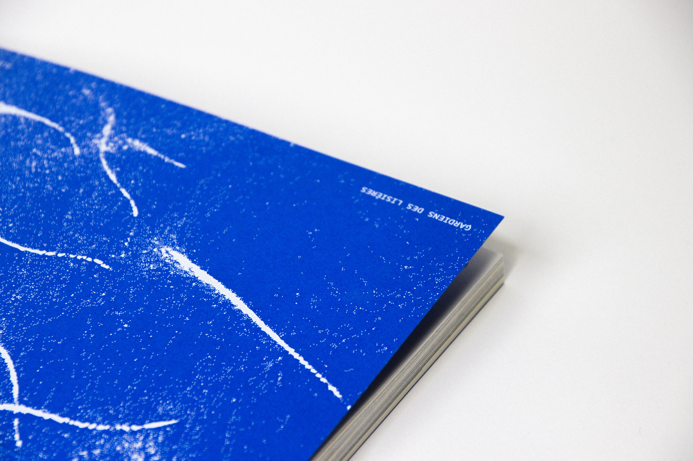
Dans quelle mesure l’exploration des lisières est-elle vecteur de création et d’émergence de nouveaux environnements ?
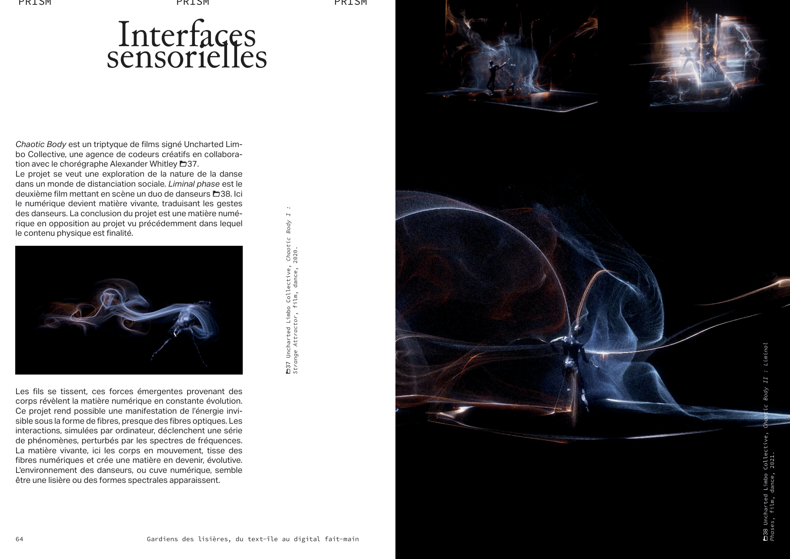
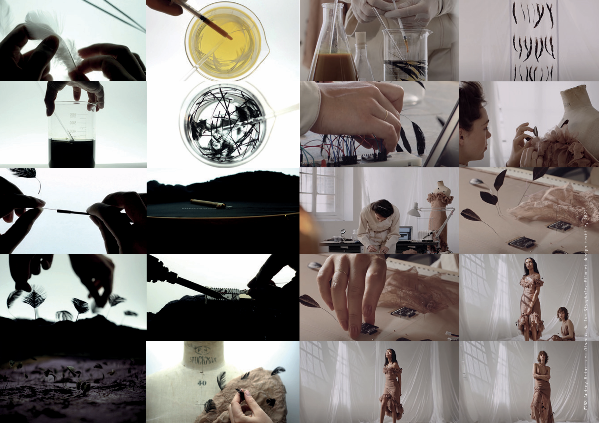
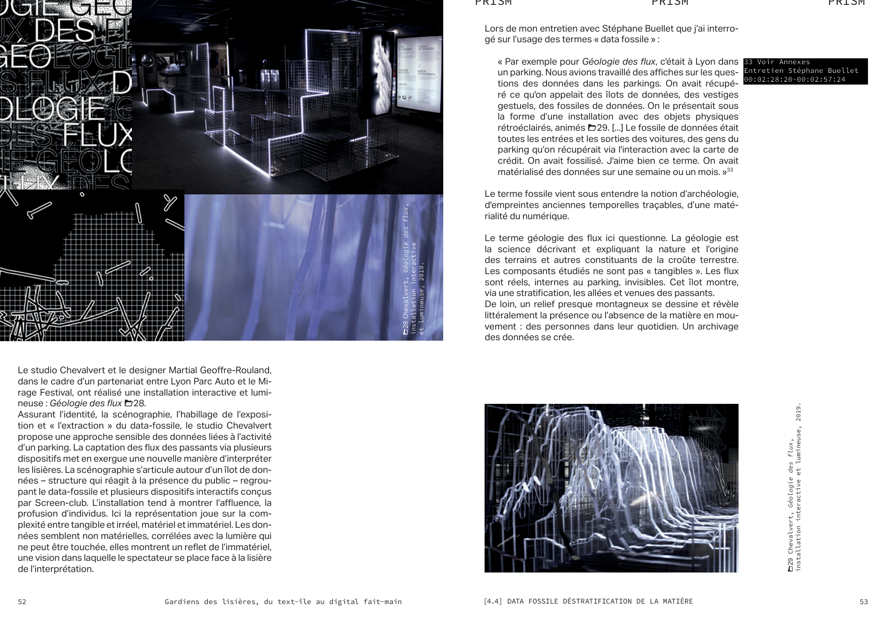
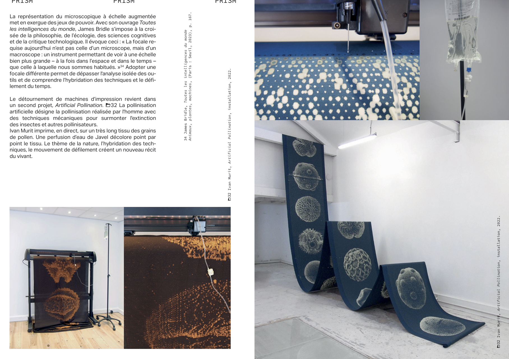

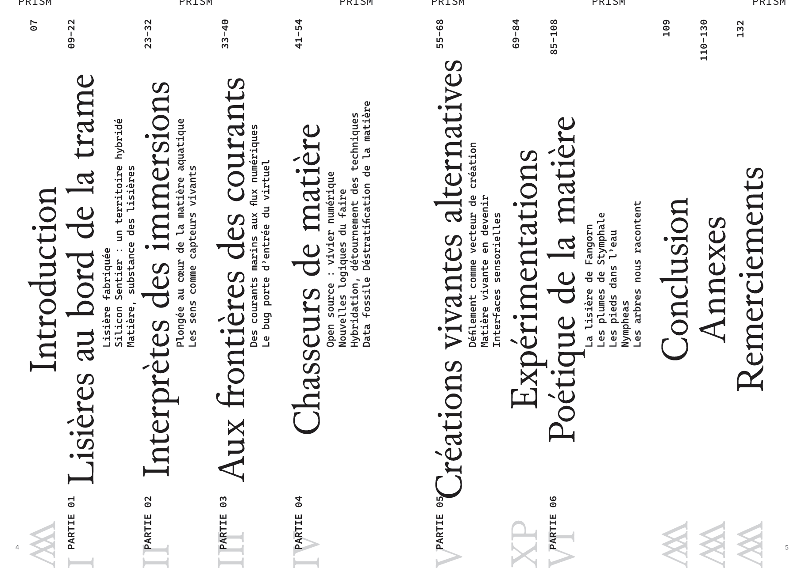
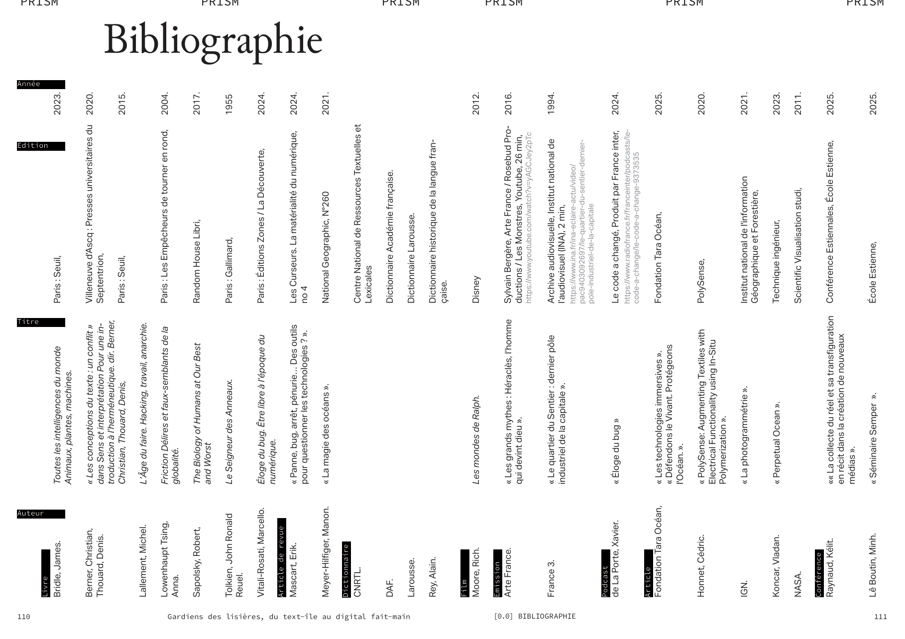
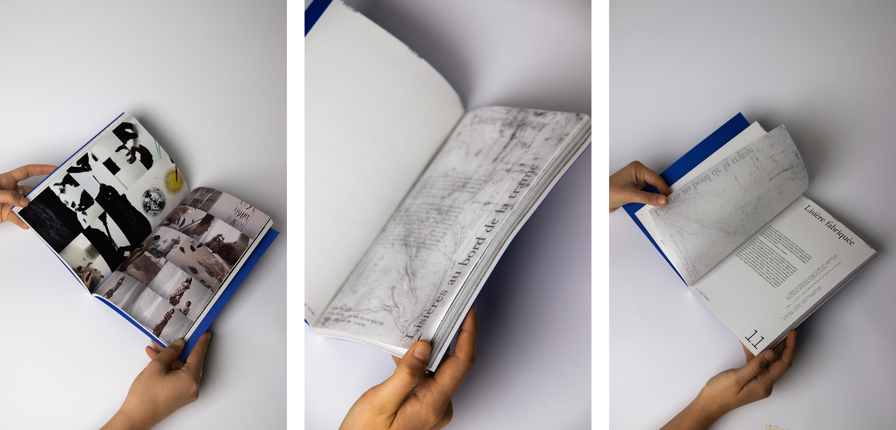
Entretiens avec Audrey Briot, designer textile et numérique, Stéphane Buellet & Ivan Murit, designers numériques, Paul Fructus, ingénieur, Minh Lê Boutin, artiste numérique et musicienne, Alec Vivier Reynaud, biodesigner et Claire Williams, artiste.
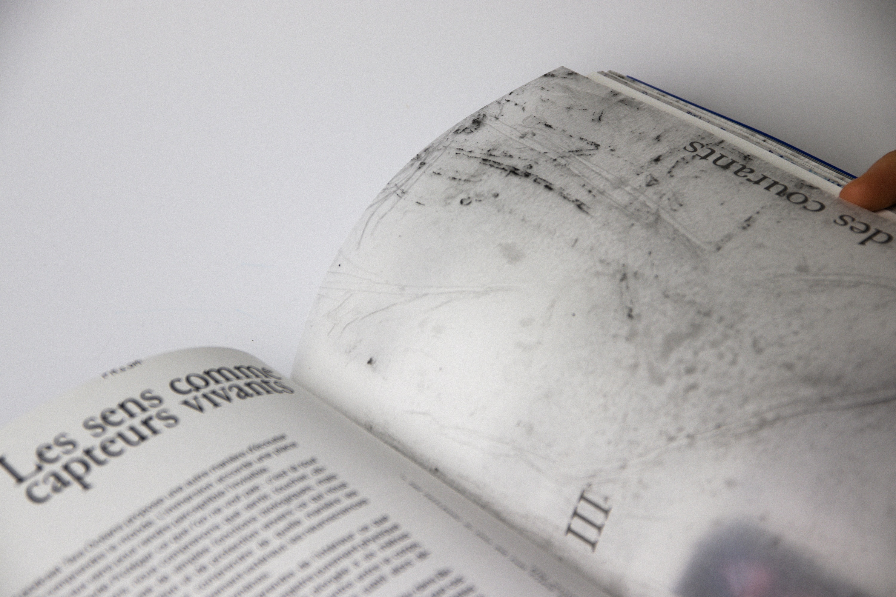
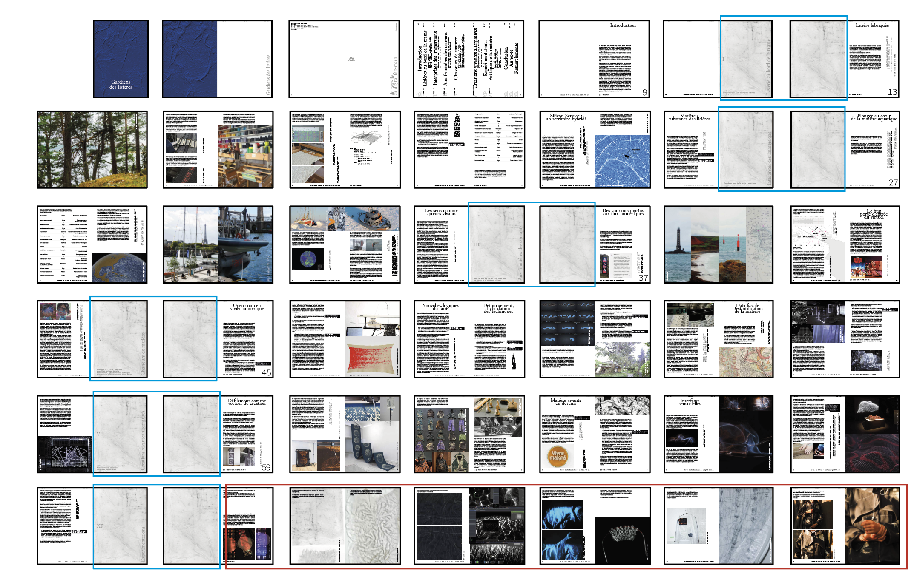
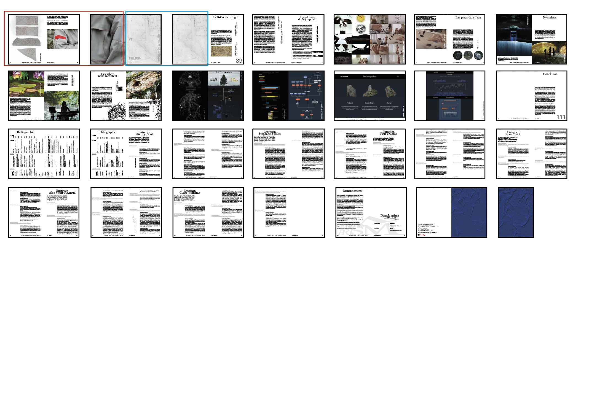
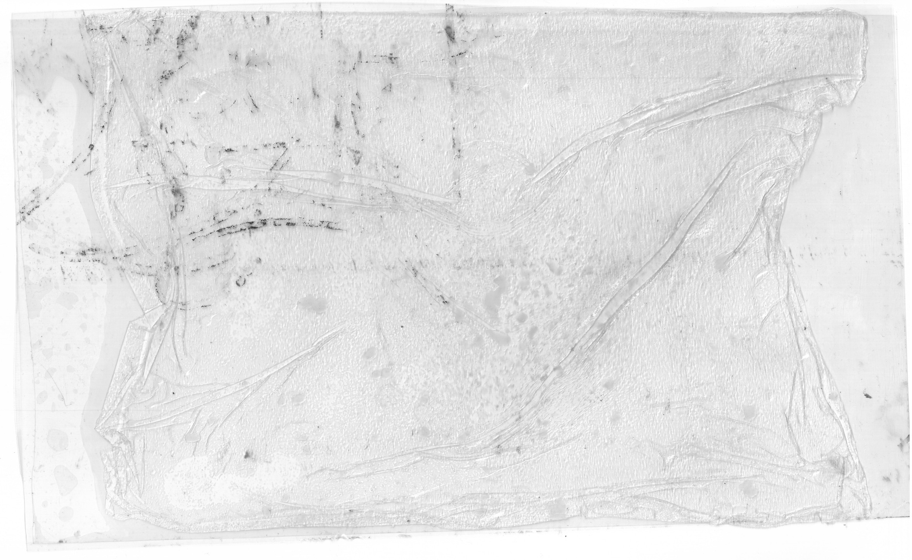
Dans la même collection :
Crash design, Niel Armengaud
W(e)doc, Louise Orione
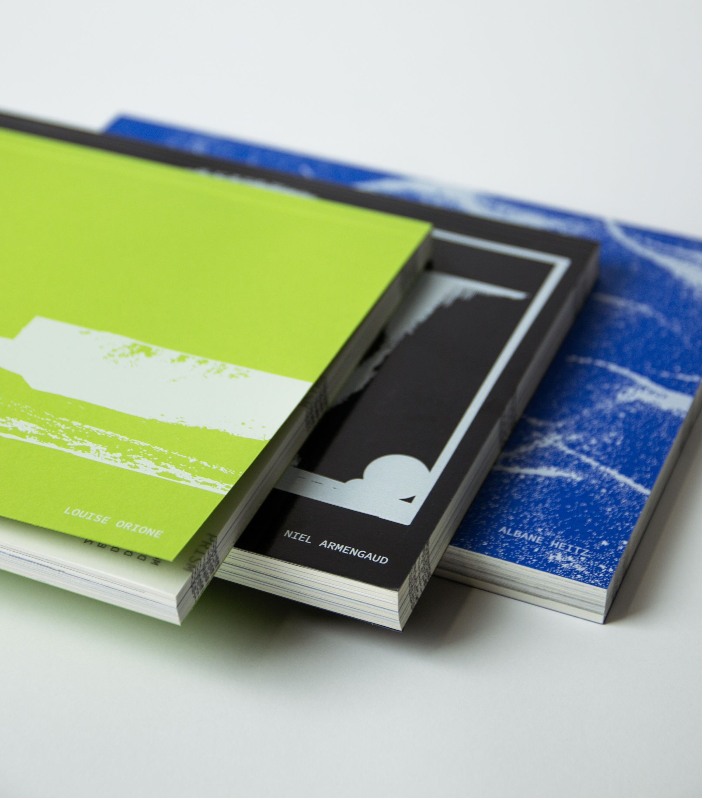